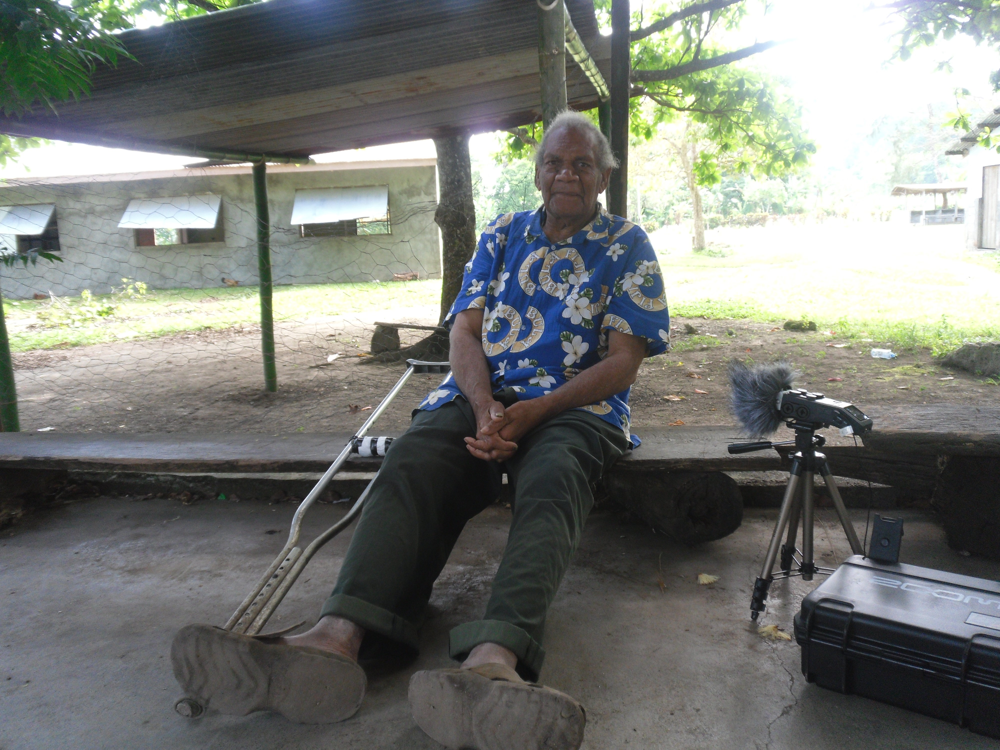

Asu xal Oum
20141027a_n01m001
This story is the first story I recorded in Mele Maat at the start of my PhD project in 2014. I am so grateful to Lik Simelum who sadly has since passed away.
You can listen to him telling the story and read translations in English and Bislama in the Pangloss archive at this link.

Inou nabit nihit tumulien tei na asu e oum.
Va tei ludi mo… lubit lalopolni nahou tava nalu. Ma lukaakau lube xolsusei, luba ma, ba lupus rut tei xa bos, ma lulasi. Lulasi, lulasi mo… bus.
Di ma lummei tim. Lummei tim, ma melengien sap, melengien sap ma lupou akis sung luba. Ba ludei vatiei xil mikiri. Ludei vatiei xil mikiri, ma bus ti, ludoxotitihi be teparumei di mue neta, ludei na, angue xila. Ludoxotitih angue, angue te xil.
Di di e mei ludi tim e lulingi tangan xa na neta, eai ian angue xil ak ivue. Ma ti ma ha sung laltin lalpangasi, ma ludi ludi mo…
Melengien sap e luba, ba lube vioh. Lube vioh mikapis. Mikapis nahou nalu. Lube vioh mo…
Bus di, ale melengien sap luba lupangasi. Lupangas nahou nalu mo… Bus di, lummei tim. Mei ludi, ma melengien sap ludilamun luba, ba lube nahou, ena fren nalu xil luleh na viak, maniok, kumal, his e tin. Lulehi ba, ma, ba luga mo… Bus ti, lulihi. Lulihi lulihi mo… Lulihi vioh ni nahou xa xiak.
Di e luba mun tim. Ba ludi, ludi ludi ma nousap vutei, di e bitene, “ralha mu ralsao ni nahou sa ralu; midep? Xos holesok meul mu met”; ma luba.
Luba mo nahou, luketteh be nahou mak e lupusi xa holesok salu xile meul bos xa bos. E na holie xil mun meul tuei. Xalu ba lumol. Lumol moten na, lumol moten holesok salu xil ak mo, lumol vuolni nahou.
Bus di, xalu luba, ba mun tim. Ba ludi ludi ludi ludi ludi mo, lukila xa anien xil ak melil tu xiak.
Ma melengien tei e lubitene “Ralha mu ralsaoni na nahou na ralu, xos anien xil xos be reti tu xiak. Vete metu tu xiak.”
Ma luba, maakue tamu luba. Luba mo nahou mak e lulong ueili xil xa ladi e nahou; ma luketteh e lupus xil. Ma lasi pas vioh tang, ma labe insaet labe nahou ngan xie. Ba ladi, di lagani ena anien xil ak.
Oum bitene “Asu xouk uso xol vul xa xiak e inou ha nixol ueili xil, taem xa ngan immei mak e utal xati.”
Ma asu bitene “Bos tang!”
Ma asu ba miso xol vul da e xi na oum ba migol na ueili xil. Xos xa ngan bemei e xi ulin mikani, milesai su be sotin e na neta vioh, na neta ueili bemei go, go na mesal vari a ba mistal. Gol ngan tei, oum gol ngan tesap bemei, asu dat polni mak.
Ma oum bitene “E, xouk di opolni midep xiak? Osas otalxat tava. E, uluk mikan.”
Ma tei su takes nga da xiak ma oum bitene “Bos tang! Inou su ha niso xol na na vul xa iaxai, e xou mei uxol na neta ueili immei, bemei nitalxati.”
Ma oum e na oum bemei miso xol na, na vul xa xiak e de vioh xiak e xi. Asu su ba migol ueili bemei. Taem xa bemei, mei sangas mak ena oum dalxati; dalxat na vueili ak.
Ma biteni mini asu bitene “Ha tei au, e ma ha tei au vammei.”
Ma asu ba dei au bemei, ma mei lubar xat len xalu, e hen xalu mo bus di ba, ba dei na liei, ma guri bemei, ma mei luseh au ban pe na vueili xa xiak, luguri be tim.
Ba ma lulingi de tim salu di, e xalu nep nalu tavuol xa hokkorong xa laltihi na vueili ni; ma luba visal tovolih tei.
Luba lusisi luga “Mikila li osa na neta, nep nam xa hokkorong vamue mue neta, ha maltihi neta tei a namel ni?”
E tovolih bitene, “Ha multihi neh? Ha multihi neh vari?”
E xalu lubitene, “E, maltihi neta tei amel ni tang.”
“E, mulmas mulhiteni! Mulhit naha xa ha multihi ni nep xa xiak. Xos xa mulnaaviteni ti ninaasa nep navan ti mi xamil.”
Ma xalu lubiteni mo, ba luba lumaini ta maxa “Bos tang ralhiteni ta mini.”
Ma lubiteni mini luga, “Mabit malhur nep nam, ha maltihi na vueili tei e vueili tei. Ha maltihi vueili.”
Ma xi bitene, tovolih bitene, “E, xamil misas mulotihi, multihi kuhi. Inou vari ihe ratel tangan xa ha nimue inou a a ha nitihi e nitihi kuhi.”
Ma lu mani lataba. Lataba, ba ludalxat na vueili xa xiak e tovolih mue neta dihi, dil vini di dihi. Dii leleni ma bus di, ba lusuppang e vul, luso hat ban ma bus di.
Upang di gan ma xalu mue, luleh na vueili xil ak, ba lusoni ban. Ma di lusili. Lusili, lusili mo; lusil voni na vueili xil ak. Ale upang be tan, ma lusi rat hat bemei ut, di luleh uvuei ma mei lusoni, lutin na hahau, ena vul ma bus, di luso vueili ban. Di e luket rati ba da. Di, lusoxati, lusoxati ni uvuei sap xil mun ma bus; di e lumue, lugil tan, lumue, lusoxati lusoni dalxat na uvuei xil ak, ludihini. Ludihini mo didi, e ba lube tim, tovolih dilamun be tim san.
Ma ludi mo, lube tim ma luga “Ei”, ne asu bitene, “Ei, itep ha raloxul ti bien? Ha raloxul ti e tas.”
Ma oum bitene “Bos tang, ralha.”
Ma da luba, luba. Ba lugul, lugul mo bus, ludilamun lube tim ba ma tim.
Ma lubitene, “Ha mu ralopis na neta anien xa rumue rusoxati ba di xiak.”
Ma luba. Ba lugil tan, luleherat tan ba ma bus di, luleherat uvuei, da luleherat hat, hat mun bus di, e da luleherat na neta hahau xil ma uvuei ba mak e lupongosi.
“Ui vo na vueili a ralu bos xa bos!”
Ma di lumue lulang na luleh rat uvuei ba, ba vi. Lugur rat metiei mak e wah!
Vueili tavuol, uvuei tavuol xil tu ena vul, meletin tei milehi. Di e mittoh tovolih xos, e tovolih xie mimue neta, mileh rat vueili xile di e mittoh ba na, be na vul ak di misoxati; xalu pusi mak xiak.
Lukil vari ni, luga “Tovolih ak xiak xa mei mileh rat vueili a ralu xiak.”
Ma luba, ba lupusi, luga “Ei, tovolih, visi xa bemei mileh rat na vueili amel, xouk? Xouk xa oleherati? Xos xa oleh rati ma uhiteni!”
“E, nou nataakil ti! Nataapus ti meletin xa vahat vahili.”
Luga “E, makila xouk tang. Xouk ta xa oleh rati xiak.”
E tovolih mun, tovolih mun, ma ludilamun lummei e luga “Ei, ralipolni itep?”
Oum bitene, “Ralkikei; ralkikei ena neta na tahei immei ma mei ihur rat tovolih xai itel na anien xai iha, ihe tas.”
Asu bitene, “Bos tang, ale ralkikei.”
Lubitene “Taem xa tahei immei, ngan ma ihas ihur xie, ma e ralu, xouk, asu, xouk, upueou uhe na neta lit eal nesau.” E oum bitene “Inou nihe vul nihe vul mavan.”
Ma lukikei lukikei. Lukikei ni tahei, bit tahei vammei mei valeh rat na vapo vahur tovolih xie vaha. Ma lukikei; ma kikeien mak, sisen mak:
“Tahei hovaxerxer e to pandere to pandere tahei lati vovoli malo”
Ma ba lube kohet lukikei. Tahei taammei ti mok.
“Tahei hovaxerxer e to pandere topandere tahei lati vovoli malo.”
Luketteh e tahei go nga sotin da bemei, ma lukikei:
“Tahei hovaxerxer e to pandere to pandere tahei lati vovole malo.”
Tahei di bemei xalu be kohet:
“Tahei hovaxerxer e to pandere to pandere tahei lati vovole malo.”
Tahei bemei milahati bemei xiak, asu pueou be nesau ena vatit na eal, e oum be e vul man. Tahei bemei xie, ba be ut mak xiak, ba mitiileni vari tim metimel, gur rat na tovolih xa xie de nim man, ba be tas.
E xalu lummei lustal, lummei lupus xalu; ma na tumulien ak ba bus ta igak.